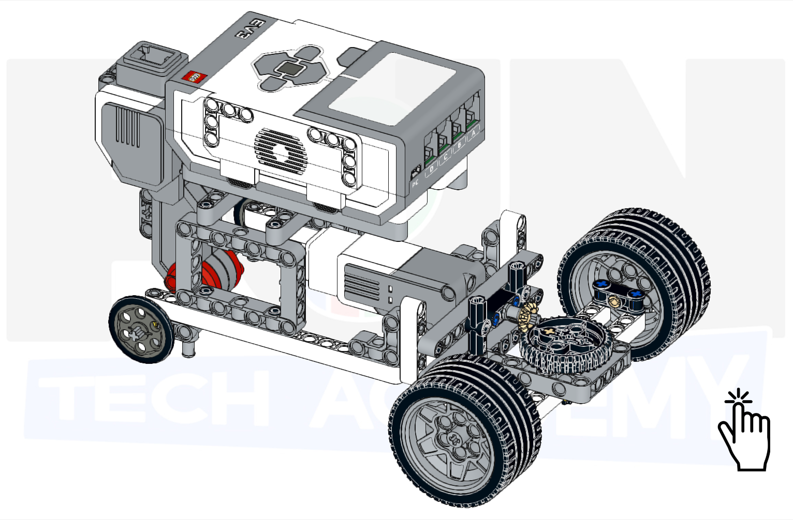
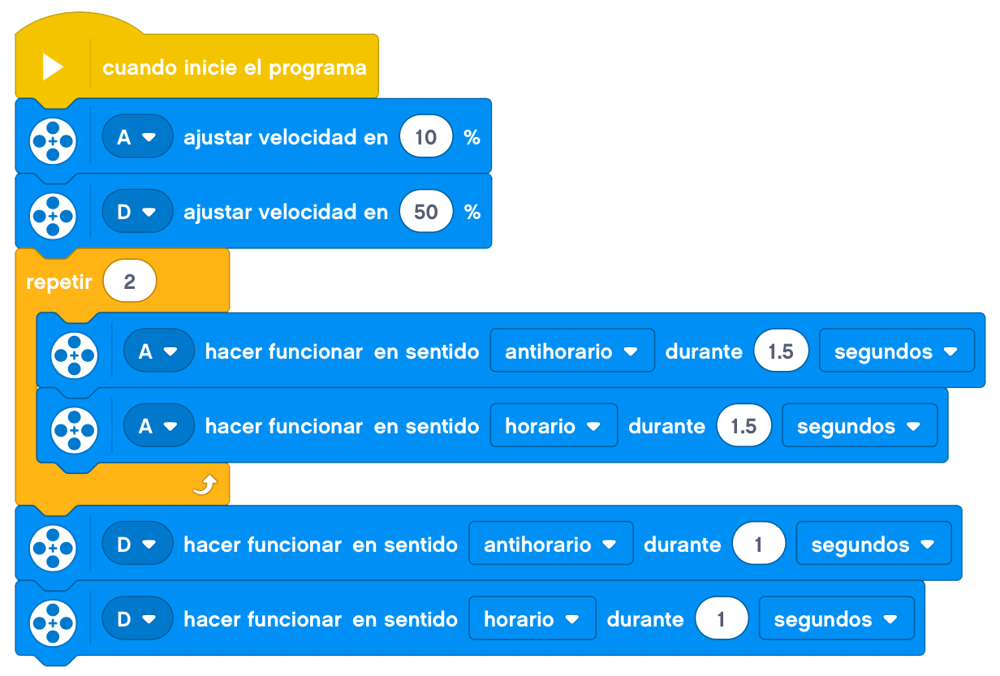

Vamos a montar en este proyecto un coche con dirección.
El coche tendrá la dirección en las ruedas delanteras mediante una barra de dirección y un motor que mueva
dicha barra. Tendrá también la tracción en las ruedas traseras mediante otro motor que haga girar estas.
El proyecto constará de dos partes. Por un lado montaremos la barra de dirección y le añadiremos
inicialmente un volante para poder moverla. Este volante lo sustituiremos por un motor posteriormente.
En la segunda parte trataremos de montar el resto del coche para poder utilizarlo después mediante un mando
a distancia.
A continuación, mostraremos un ejemplo de construcción de un coche con dirección base.
Empezaremos por montar la barra de la dirección.


Le añadimos las ruedas.


Ahora montamos los engranajes necesarios para que esta barra de dirección sea capáz de girar mediante un volante (o motor).


Unimos la barra con los engranajes.


Con esto ya tendríamos la primera parte del proyecto.

Podríamos añadirle un volante para poder moverlo o hacerlo simplemente de la siguiente forma.

Empezamos a añadirle la estructura. Lo primero es reforzar esta barra.


Seguimos con el resto de la estructura para sujetar el motor que hará girar la dirección.


Le añadimos el motor que moverá la dirección a esta estructura.


Ahora unimos la estructura con el motor a la barra de la dirección.


Ahora se podría enganchar el motor al bloque con un cable y mover la dirección.

Continuamos con la estructura para el resto del coche.
La siguiente parte la hacemos por duplicado para los dos lados de la estructura.

Añadimos estas piezas a lo que ya tenemos montado.

Seguimos añadiendo la estructura donde sujetaremos el bloque EV3.


Le añadimos al bloque EV3 la pieza que sujetará el motor que impulsará el coche.

Sujetamos el bloque EV3 a la estructura.

Ahora empezamos a montar el motor de tracción.

Se lo añadimos a la estructura, en la parte trasera.


Terminamos por enganchar el motor al bloque EV3 y tendríamos el montaje terminado.

Le añadimos el cableado y nos debería de quedar un montaje de este estilo.

En este caso no lo programaremos sino que utilizaremos la aplicación Comander para manejar nuestro coche.
Nuestro proyecto terminado y programado funcionaría de la siguiente forma.